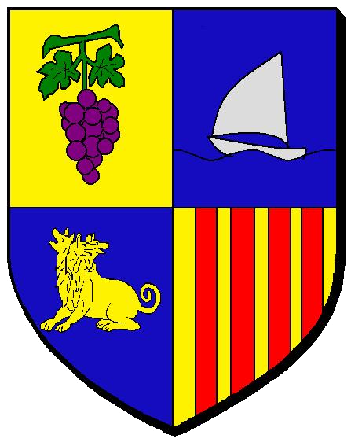
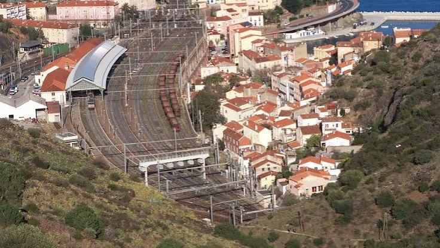
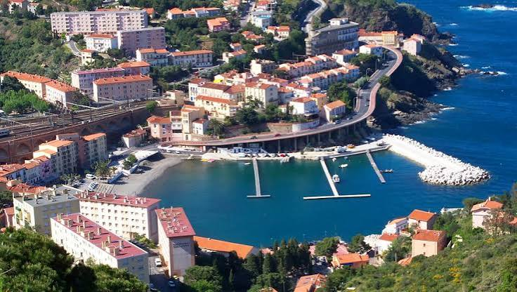

Cerbère
Frontière du rail
et de la mer


⟹ Dernier village français · Rail · Réserve marine ⟸

Un vallon isolé de la Côte Vermeille. Jusqu’au XIXe siècle, Cerbère n’est qu’un petit hameau dépendant de Banyuls-sur-Mer. Le relief abrupt, les criques et les pentes couvertes de vignes limitent longtemps le développement urbain. Quelques familles vivent alors de la pêche, de la vigne et des échanges de frontière.
1878 : la révolution ferroviaire. Tout change avec l’ouverture de la liaison ferroviaire internationale entre la France et l’Espagne. Cerbère devient un point de passage majeur car les réseaux français et espagnols utilisent des écartements de voies différents.
Le transbordement, moteur de la ville. Voyageurs et marchandises doivent changer de train. Les fruits et agrumes venus d’Espagne sont transbordés d’un wagon à l’autre, créant une importante activité de manutention. Autour de la gare se développent ateliers, entrepôts, logements, cafés, hôtels et services douaniers.

Les transbordeuses de Cerbère. De nombreuses femmes sont employées au transbordement des oranges et autres marchandises. Leur travail difficile devient l’un des symboles de l’histoire sociale locale. Les mouvements collectifs de ces ouvrières ont laissé une forte mémoire dans la commune.
Une commune autonome. L’essor ferroviaire provoque une croissance rapide du hameau, qui se détache de Banyuls-sur-Mer et devient une commune à part entière au XIXe siècle. La ville est ainsi l’une des rares localités de la côte catalane dont l’urbanisation est directement liée au chemin de fer.
Une gare monumentale. La gare internationale, avec sa grande halle, ses voies multiples, ses installations douanières et son architecture ferroviaire, reste le cœur spectaculaire de Cerbère. Elle rappelle l’époque où des milliers de voyageurs et de tonnes de marchandises y transitaient.
Le Belvédère du Rayon Vert. Dans les années 1930, l’architecte Léon Baille construit un hôtel-paquebot spectaculaire au-dessus des voies : le Belvédère du Rayon Vert. Sa silhouette moderniste, ses terrasses et ses lignes inspirées des paquebots en font l’un des monuments les plus originaux du littoral méditerranéen.
Un territoire de passage et d’exil. La proximité immédiate de la frontière donne à Cerbère un rôle particulier lors des conflits, des migrations et des passages clandestins du XXe siècle. La gare et les cols voisins voient passer voyageurs, réfugiés, résistants et exilés.
La mer comme patrimoine naturel. Entre Cerbère et Banyuls-sur-Mer s’étend la première réserve naturelle marine créée en France. Les fonds rocheux, herbiers, coralligène et nombreuses espèces méditerranéennes font de ce secteur un site majeur pour la plongée et l’observation sous-marine.
Cerbère aujourd’hui. La commune conserve une identité très singulière, faite de rail, de frontière, d’architecture moderne et de paysages marins. Plus discrète que les grandes stations voisines, elle offre l’une des lectures les plus originales de la Côte Vermeille.

Pour approfondir : Office de tourisme — Cerbère, village né du rail · Office de tourisme — Cerbère · Office de tourisme Pyrénées Méditerranée.
Les transbordeuses de Cerbère occupent une place majeure dans la mémoire locale. Ces ouvrières déchargeaient à la main les fruits et marchandises des trains espagnols pour les charger dans les wagons français, du fait de la différence d’écartement des voies.
L’architecte Léon Baille a donné à Cerbère son monument le plus spectaculaire avec le Belvédère du Rayon Vert, hôtel moderniste des années 1930 inspiré de l’esthétique des paquebots.
Accès : Cerbère est desservie par le train depuis Perpignan, Collioure et Port-Vendres, avec continuité vers Portbou en Espagne. Par la route, la D914 longe la Côte Vermeille jusqu’à la frontière.
Office de tourisme : les informations touristiques sont assurées par l’Office de Tourisme Intercommunal Pyrénées Méditerranée.
À savoir : la commune est très escarpée. Pour les balades sur le sentier littoral et les crêtes, prévoir de bonnes chaussures, de l’eau et tenir compte du vent et des restrictions estivales d’accès aux massifs.